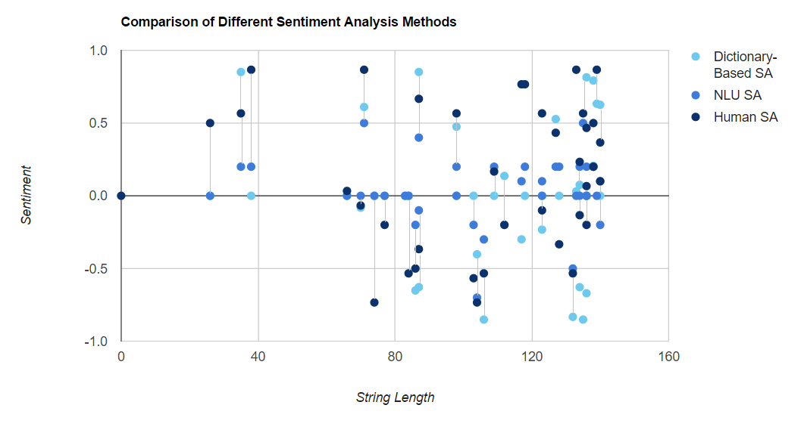
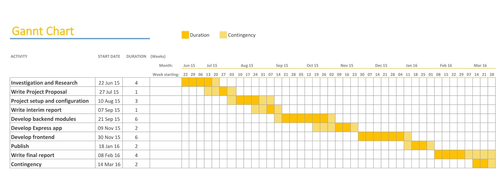

Sentiment Analysis
on Real-Time Social Media Data
Alicia Sykes
Links
Live Demo:
http://sentiment-sweep.com
Source Code and Documentation:
https://git.io/vVhGy
This Presentation:
http://presentation.sentiment-sweep.com/
The world is changing
3.65 billion people internet access via a smart phone/ tablet
2.1 billion people regularly use social media
1.3 billion people are registered on Twitter
88% of Twitter users are on mobile
500 million+ tweets per day
People openly express their opinions on social networks
Much of this data is public, and freely available
This makes social media data, such as tweets ideal for gauging peoples opinions
This data has the potential to totally revolutionise how information is gathered
However, there's a problem...
The Problem
There is no way of interpreting the key attitudes and opinions conveyed in social media data, other than reading through an unworkable mass of tweets, most of which may not even be relevant to the topic.
Further to this, it's not possible for a human to draw trends between the overall sentiment, and other factors such as location, time, key events and more
The Aim
The aim of this project was to develop a platform that would calculate the sentiment towards a given topic, and display results in a series of interactive data visualisations that will allow trends to be found
More specifically, the final solution will stream real-time Twitter data, and allow the user to enter a specific topic or keyword to display live sentiment results in various forms.
Aims
- Show how sentiment varies with location. i.e. which areas of the country and world are more or less positive about a given topic
- Show how sentiment varies with time. What are the most positive or negative times of day for the specified keyword
- Give an insight into why the sentiment value is what it is. What keywords are people talking about which make the overall attitude more or less positive
- Compare the sentiment values of two similar topics or keywords
Secondary Aim
This is quite a new area, and in order to complete the final solution I will bring together several new technologies in a way they have not been used before.
For that reason, I am going to develop the application following a modular approach and for each component developed, it will be fully tested, documented and then published to the open source community both on GitHub and NPM.
This will allow other developers to build on the existing code base and take it further.
Real-world uses
There are many times when this would be extremely useful, or provide interesting insights. For example
- Analysing the success of a marketing campaign
- Predicting the result of an election
- Comparing the sentiment towards a brand/ company with it's competitors
- Market research
My motivation for developing this application was:
- Nothing like this already exists
- To try and tackle the challenge of making sense of such a large amount of social media data
- To learn and utilise the latest open source technologies
- To research a new, but fast expanding area of technology
- To develop an efficient yet accurate sentiment analysis algorithm
- To give something back to the open source community
- To accept the challenge of creating a fully scalable app
- To learn about visual analytics, and the use of JavaScript and D3 to represent data
- Because it's such an interesting and fast moving area, with so much potential for coolness!
Research 1
Current Research and uses for Social Sentiment Analysis
Extensive research into the current progress of sentiment analysis, including a literature review was carried out.
Predicting Election Winners
Twitter is a well-known micro-blogging website which allows millions of users to interact over different types of communities, topics, and tweeting trends. The big data being generated on Twitter daily, and its significant impact on social networking, has motivated the application of data mining (analysis) to extract useful information from tweets.[2013] Tariq Mahmood, Atika Mustafa, Tasmiyah Iqbal, Farnaz Amin and Wajeeta Lohaana, "Mining Twitter Big Data to Predict 2013 Pakistan Election Winner", IEEE INMIC, Lahore, Pakistan
Determining Customer Opinions
One key use for this insight into people opinions would be to aid marketing campaigns, as companies will have a better understanding of what techniques were effective in successfully marketing a product or serviceWenbo Wang et. al 2012
Predicting Stock Prices
Tweet sentiment score precedes stock price movement starting from about 7 hours beforehand for the highest gainers in stock. As time goes on, the correlation between tweets score and stock prices increases linearly. This shows that to some degree, tweet sentiments precede stock prices.Meesad (2014)
Research 2
Exploring methods of sentiment analysis
Research was conducted into the ways that sentiment can be calculated, and a few sample algorithms were developed in order to find the best option for the final solution
Lexicon-based Approach
The lexicon-based approach involves calculating orientation for a document from the semantic orientation of words or phrases in the document
This is usually done with a predefined dataset of words annotated with their semantic values, and a simple algorithm can then calculate an overall semantic score for a given string. Dictionaries for this approach can either be created manually, or automatically, using seed words to expand the list of wordsNatural Language Understanding Approach
The natural language understanding (NLU) or text classification approach involves building classifiers from labelled instances of texts or sentences, essentially a supervised classification task.
There are various NLU algorithms, the two main branches are supervised and unsupervised machine learning. A supervised learning algorithm generally builds a classification model on a large annotated corpus. Its accuracy is mainly based on the quality of the annotation, and usually the training process will take a long time. Unsupervised uses a sentiment dictionary, rather like the lexicon-based approach, with the addition that builds up a database of common phrases and their aggregated sentiment as well.Experiment to compare SA methods
I conducted an experiment to find the optimum SA algorithm, in terms of efficiency and accuracy. A lexicon approach, NLU approach and a human (as a bench mark) calculated sentiment over the same set of Tweets to and the results were compared.
The Results
A live demo of results can be viewed at http://sentiment-sweep.com/sa-comparison Key Findings
- There was a clear relationship between the length of the input string (in this case a Tweet) and the accuracy of the results
- The dictionary-based results tended to produce more neutral values, whereas the NLU method was able to distinguish positivity and negativity in most tweets
- NLU occasionally was capable of factoring in simple sarcasm
Methodology
1. Project Management
Agile
The application was developed following the agile methodology
The methodology used in this project followed the principles of agile, more specifically personal-SCRUM (one-man agile). This is an iterative approach, where the project will be divided into a set of phases, called sprints. Each sprint had a set of requirements presented in the form of user stories and acceptance criteria. The sprint was only marked as complete once each story has been developed, implemented and tested (or descoped). User stories were prioritised and given a complexity estimate before each sprint, to ensure the best use of time and resources.Key Agile Principles
- Test Driven Development (TDD)
- Refactoring
- Continuous Integration
- Doing the simplest possible to make the solution work, then refactoring
- Automated deployment
Risk

Time Plan
Sprints
- Sprint 0 – Project setup
- Sprint 1 – Create base application and empty database
- Sprint 2 – All tweet handling backend modules
- Sprint 3 – All location and utility backend modules
- Sprint 4 – Sentiment Analysis module
- Sprint 5 – Integrate backend modules into application
- Sprint 6 – Link blank frontend to backend to make twitter sentiment results
- Sprint 7 – All geographically based sentiment data visualisations
- Sprint 8 – All keyword based sentiment data visualisations
- Sprint 9 – Timeline, trending and comparison data visualisations
- Sprint 10 – Implement real-time functionality into data visualisations and create txt page
- Sprint 11 – Home page and search page
- Sprint 12 – Final testing, code quality, UX review – then publish to public cloud server
Methodology
2. Development Tools
Tools used while developing
- VCS - Git
- IDE - WebStorm
- Dev Server - CeontOS VPS
Building
Gulp was used to automate the project build process.
A script was developed and configured, to do the following:
- Compile server-side scripts
- Compile client-side scripts
- Compile styles
- Optimise images and graphics
- Run tests (see later.)
- Clean the workspace
- Check for errors, warnings and poor code style
- Lint appropriate code
- Minify appropriate code
- Browserify client-side scripts
- Log useful output to the console
- Watch files for changes, and run the correct task on change
- Keep multiple browsers and devices in sync during development
- Provide a simple interface to do all of the above
Methodology
3. Testing
Test Driven Development
Unit Testing
Behaviour Driven Development
Automated Continuous Integration Testing
Coverage Testing
Dependency Checking
Automated Code Reviews
Assertions
The test framework
Stubs, spies and mocks
Headless Testing
Testing HTTP services
Pass Fail Criteria
Test Type |
Pass Condition |
|---|---|
Functional Testing |
All acceptance criteria must be met, checked and documented |
Unit Tests |
All acceptance criteria must be met, checked and documented |
Integration Tests |
100% pass rate after every commit |
Coverage Tests |
80% or greater |
Code Reviews |
B grade/ Level 4 or higher. Ideally A grade/ Level 5 if possible. |
Dependency Checks |
Mostly up-to-date dependencies except in justified circumstances. |
Documenting Results
Methodology
4. Front End
D3.js
The majority of the charts and data visualizations were
coded in D3.js (but written in CoffeeScript).
D3 (or Data Driven Documents) is an advanced JavaScript
library for manipulating documents based on data. It
allows for web elements (such as SVG and HTML) to be
bound to data.
(See more at https://d3js.org/).
D3 was chosen, because it is focused on binding DOM
elements to the data, and is a bare-bones language,
meaning the highly customizable documents can be created.
Furthermore D3.js is written in JavaScript, and uses a
functional style meaning code reuse is seamless.
For this project CoffeeScript will be used as opposed
to JavaScript, but the same applies.
Methodology
5. Backend
Node.js
Node.js is a JavaScript runtime built on Chrome's V8 JavaScript engine. Node.js uses an event-driven, non-blocking I/O model that makes it lightweight and efficient
Key Components of the Backend
- Tweet handling
- Sentiment Analysis
- Data adapter
Tweet Handeling
Two node packaged were developed and published, for getting tweets:
- fetch-tweets - fetches tweets from Twitter based on topic, location, timeframe or combination
- stream-tweets - streams live Tweets in real-time
A data cache was also developed, using MongoDB as the database to store significant tweets from the past 24 hours. This speeds up initial page load
fetch-tweets: https://www.npmjs.com/package/fetch-tweetsstream-tweets: https://www.npmjs.com/package/stream-tweets
Sentiment Analysis
A sentiment analysis algorithm was developed from scratch,
fully unit tested, documented and published to NPM.
It is significantly faster than other SA algorithms, with an
85% accuracy, it is ideal for calculating sentiment of live
twitter data quickly.
Since it was published in December, it has been used by 800+ different developers world wide.
Download Page (on NPM): https://www.npmjs.com/package/sentiment-analysis
Documentation and Source Code (on GitHub): https://github.com/Lissy93/sentiment-analysis
Geographical Modules
Since there are several location-based data visualisations, a series of geo modules were developed and published to calculate interim resultsplace-lookup - finds the lat and long for any fuzzy place name based on the Google Places database
https://github.com/Lissy93/place-lookup
tweet-location - calculates the location from geo-tagged Tweets using the Twitter Geo API
https://www.npmjs.com/package/tweet-location
find-region-from-location - given a lat and long calculates which region that point belongs in
https://github.com/Lissy93/find-region-from-location
Node module to extract keywords from a sentence
remove-words - removes all non-key words from a string sentencehttps://www.npmjs.com/package/remove-words
API wrapper modules
hp-haven-sentiment-analysis - A Node.js client library for HP Haven OnDemand SAhttps://github.com/Lissy93/haven-sentiment-analysis
haven-entity-extraction - Node.js client for HP Haven OnDemand Entity Extraction
https://github.com/Lissy93/haven-entity-extraction